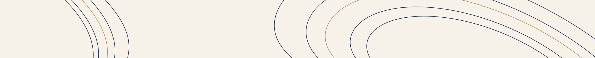
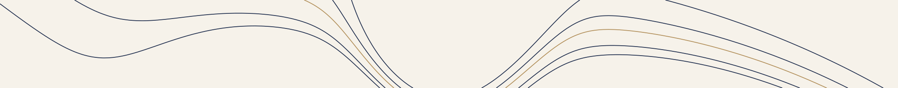

Student-led · Peer-reviewed · Founded 2026
Refereed economics, written by students
The International Student Economics Journal (ISEJ) is a student-led, peer-reviewed journal for undergraduate economics research.
About
The International Student Economics Journal (ISEJ) provides a rigorous venue for undergraduates to develop and publish original work that goes beyond the standard of assessed coursework.
The journal is led and edited by students, while academic review is external. Papers that pass the editorial desk are evaluated by independent referees drawn from PhD students, faculty, early-career researchers and practitioners.
Senior Advisers with experience at institutions including the European Central Bank, the World Bank and the Bank of England provide guidance on academic standards and the journal's development. Our network brings together students at more than 20 universities in the UK, US, Europe and Asia.
ISEJ publishes two issues each year and accepts submissions on a rolling basis. Submissions span economics and related fields, including:
- Applied microeconomics
- Political economy
- Macroeconomics and finance
- Econometrics
- Environmental and digital economics

Contact
Enquiries and submissions may be sent to the editorial team at isej.org@gmail.com.
